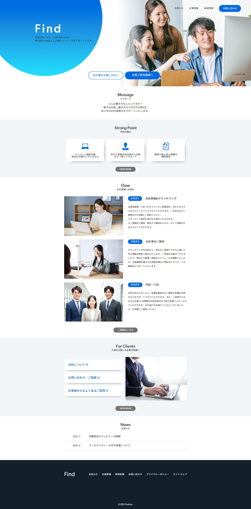

Works
- 概要
- 人材総合サービスのコーポレートサイト
- 制作目的
- HPのリニューアル。求職者にサービスを知ってもらう。取引企業やお問い合わせ数を増やす。
- ターゲット
-
20代～50代の男女。転職や再就職に向けて、転職サイトを探している方。
求人掲載先を探している企業。人材系の業界を志望している就活生。
- テーマカラー
- デザインコンセプト
- クリーンな企業イメージになるよう青色をメインカラーにしました。 また求職者向け・企業向けですぐに見るべき場所が分かるようトップ中心にボタンを配置しました。
- 担当範囲
- 企画/デザイン/コーディング
- 使用ツール
- Photoshop/Illustrator
- 制作期間
- 4日間
- URL
- https://waki-h.github.io/find/
